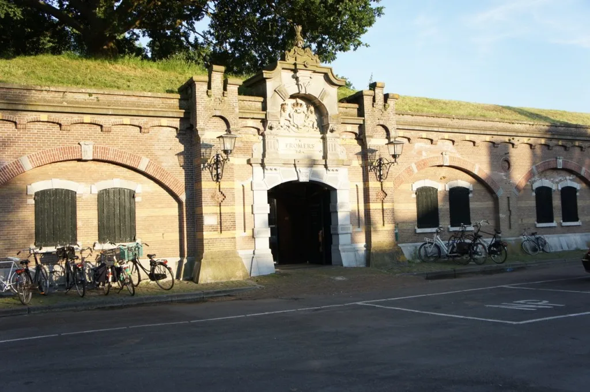
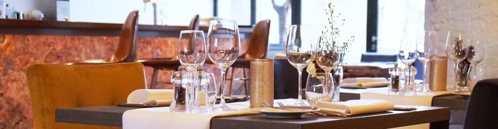
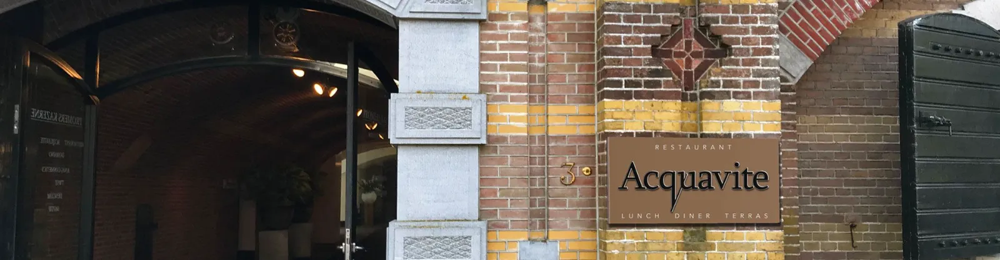
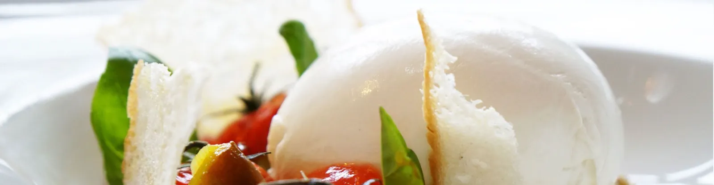
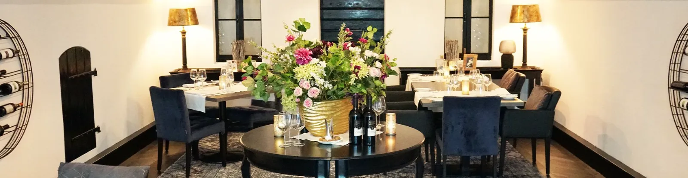

Promers Kazerne, Naarden-Vesting
Acquavite
Traditionele Italiaanse gerechten in een modern jasje, met soms een uitstapje naar de rest van de mediterranée. Chefs Sabina en Jozef koken voor u in een historische kazerne, en bij mooi weer op het terras in de binnentuin.
Ma en do t/m zo vanaf 17.30 uur 035 - 694 2587
Extra open voor grotere groepen in december: dinsdag 15 en woensdag 16 december (vanaf 30 personen). De feestdagen komen eraan: ook uw bedrijfsborrel, -diner of feest verzorgen wij graag. Vraag een offerte aan
Zij aan zij, van Italië naar Naarden
Eigenaren Jozef Hupka en Sabina Cont staan zelf in de keuken. Jaren geleden stonden ze al samen achter de pannen in Italië, en daar ontstond het idee om samen een restaurant te beginnen. Het resultaat is Acquavite: traditioneel Italiaans met een moderne twist.
Het restaurant zit in de oude Promers Kazerne, midden in het pittoreske vestingstadje in het Gooi. Een historische setting met een warme inrichting en een modern sausje. In de zomer zit u op het terras in de binnentuin, in alle rust.
Acquavite staat bekend als dé plek voor een romantisch etentje, maar ook voor grotere diners en partijen. Er is een ruime parkeerplaats, en snel een pizza halen kan natuurlijk ook.
“Echt een parel in Naarden. Heerlijk eten en geweldig personeel!”Een gast van Acquavite


Dalla nostra cucina
Bij de verrassingsmenu’s kiest u uit vis, vlees of vegetarisch. Heeft u een voedselallergie of lust u iets niet? Laat het ons weten.
Stuzzichini hapjes voor bij de prosecco
- Bruschetta con pomodoro€ 4,95
Bruschetta / tomaat / knoflook / basilicum / Parmaham
- Huisgemaakte focaccia€ 6,00
Met tapenade en olijfolie
- Schiacciata speciale con mozzarella di bufala€ 16,50
Krokante pizzabodem / zeezout / rozemarijn / buffelmozzarella / cherrytomaatjes
Antipasti voorgerechten
- Crema di nocci, pera e pane brioche€ 16,50
Notenpaté / gepocheerde peer / gegrilde brioche (vegetarisch)
- Prosciutto di cervo€ 17,95
Huisgemaakte hertenham / abrikozenchutney / gerookte amandel
- Merluzzo e gamberone€ 17,95
Gebakken gamba / kabeljauwrillette / pikante paprikacompote
- Antipasto classico€ 17,95
Italiaanse vleeswaren / kazen / huisgemaakt knoflookbrood / gegrilde artisjokken / olijven
- Antipasto Acquavite€ 18,50
5 hapjes van onze voorgerechten
Primi piatti pasta en soep
- Zuppa di pastinaca e tartufo€ 15,50
Romige pastinaaksoep met truffel en tuinkruiden (vegetarisch)
- Zuppa di pesce€ 17,50
Vissoep / diverse vis en schaaldieren / knoflookfocaccia. Als hoofdgerecht € 24,50
- Risotto marzancolle e zucca€ 17,50
Risotto / gamba’s / pompoen / tuinkruiden (kan vegetarisch). Als hoofdgerecht € 24,50
- Cannelloni ripieni di fagiano e funghi€ 17,50
Gegratineerde cannelloni uit de oven / béchamel / fazantvulling / paddenstoelen / rucola / Parmezaanse kaas
Bijgerechten bij de pasta: side salad € 5,75 · gegrilde groenten € 6,75
Secondi piatti hoofdgerechten
- Gorgonzola, fichi e zucca€ 24,50
Gorgonzola / filodeeg / pompoen / bimi / pijnboompitten / vijgencompote (vegetarisch)
- Duo di cervo€ 29,50
Gebakken hertenfilet / hertenworst / aardappel-knolseldergratin / balsamico-witlof / rodewijnsaus
- Pesce del giorno€ 28,75
Vis van de dag met bijpassende garnituur, de gastheer of gastvrouw vertelt u er graag over
- Manzo grigliato€ 31,50
Gegrilde runderentrecote / linzenstoof / geroosterde wintergroente / krokantje van aardappel / rodewijnsaus
Pizza
- Pizza margherita€ 18,50
Tomaat / buffelmozzarella / cherrytomaatjes / basilicum
- Pizza bianca€ 18,50
Mozzarella / champignons / pikante paprikarelish / rucola
- Pizza tonno piccante€ 18,50
Mozzarella / tomaat / tonijn / ’nduja (pittige salami)
- Pizza del carnivoro€ 18,50
Mozzarella / tomaat / gerookte runder-rib-eye / truffelcrème / rucola
- Pizza 4 stagioni€ 18,50
Mozzarella / tomaat / ham / olijf / artisjok / salami / ui
Dolci
- Gelato misto fatto in casa€ 2,95
Huisgemaakte sorbet en roomijs, diverse smaken, per bol
- Cioccolatini€ 2,00
Huisgemaakte bonbons voor bij de koffie, per stuk
- Datteri e arancia€ 11,75
Sticky dadelcake / sinaasappelsalade / sinaasappel-vanillecrème / krokant victoriamengsel / huisgemaakt malaga-ijs
- Dessert della settimana€ 11,75
Dessert van de week
- Affogato al caffè€ 11,75
Espresso / vanille-ijs / karamel / gesuikerde pecannoten / chocoladeschotsen. “Corretto”, met Barristo 43 likeur: suppl. € 3,00
- Sgroppino€ 10,25
Citroensorbetijs / wodka / prosecco
- Formaggi misti€ 15,50
Kaasplankje met 4 soorten kaas en huisgemaakt vijgen-notenbrood
Pasta en pizza voor thuis
Onze favoriete gerechten om af te halen. Vragen over afhalen? Bel ons op 035 - 694 2587.

- Huisgemaakte focacciaHuisgemaakt brood (portie 250 gram) met olijventapenade of kruidenboter€ 6,00
- Portie gegrilde groentenGegrilde paprika, aubergine, pompoen en courgette met olijfolie€ 6,75
- Antipasto classicoItaliaanse vleeswaren, kazen, gegrilde artisjokken met knoflookbrood€ 14,50
- Salade capreseBuffelmozzarella, rucola, tomaat, basilicum en olijfolie€ 14,00
- Spaghetti aglio, olio e peperoncinoMet knoflook, olijfolie, Spaanse peper en peterselie (bakje Parmezaanse kaas)€ 13,50
- Pizza margheritaTomaat, mozzarella, cherrytomaatjes en basilicum€ 12,00
- Pizza calabreseTomatensaus, mozzarella, pikante Italiaanse salami en pikante olie€ 14,00
- Pizza salameTomatensaus, mozzarella en Italiaanse salami€ 14,00
- Pizza cottoTomatensaus, mozzarella en gekookte ham€ 14,00
- Pizza napoletanaTomatensaus, mozzarella, kappertjes, olijven en ansjovis€ 14,00
- Pizza verdureTomatensaus, mozzarella, gegrilde groenten, champignons en ui€ 14,50
- Pizza 4 formaggiTomatensaus en vier kazen: taleggio, gorgonzola, Parmezaanse kaas en mozzarella€ 14,50
- Pizza tonnoTomatensaus, mozzarella, tonijn, ui en kappertjes€ 15,00
- Pizza 4 stagioniTomatensaus, mozzarella, champignons, ham, ui, artisjokken en olijven€ 14,50
- CalzoneGevuld met ham, salami, champignons, ui en mozzarella€ 14,50
- Pizza prosciutto crudoTomatensaus, mozzarella, cherrytomaat en Parmaham€ 16,50
- Extra ingrediëntenper item€ 2,50

Partijen en bruiloften
De centrale ligging, de uitstraling van de Promers Kazerne en de karakteristieke binnentuin maken Acquavite dé locatie voor bijzondere feesten en gelegenheden. Heeft u iets te vieren, dan maken wij er uw feest van.
Private room, ongeveer 25 personen
Voor kleinere gelegenheden dineert u in besloten kring in onze private room. Een klassiek diner of een walking dinner? Italiaans of liever Frans? Een gezellige borrel of een knalfeest met dj?
Grote gezelschappen, tot 300 personen
Voor grotere gelegenheden nodigen we u graag uit voor een vrijblijvend gesprek over de mogelijkheden en al uw wensen. Klein of groot, bij Acquavite staan uw wensen voorop.
Bruiloften, zomer en winter
Door de veelzijdigheid van de locatie zijn de mogelijkheden talrijk, en iedere bruiloft is uniek. Wij verzorgen uw dag van receptie tot en met feestavond, of alleen de receptie, het diner of het feest.
Reserveren
Reserveer uw tafel hier online, tot snel! Reserveren voor dezelfde dag kan alleen telefonisch: 035 - 694 2587.
Met een groter gezelschap, of een lunch of feestje buiten de gewone openingstijden? Dat kan op aanvraag. Informeer gerust naar de mogelijkheden.
Het restaurant is rolstoeltoegankelijk en heeft een aangepast toilet.
Openingstijden
| Maandag | 17.30 – 22.00 |
|---|---|
| Dinsdag | Gesloten* |
| Woensdag | Gesloten* |
| Donderdag | 17.30 – 22.00 |
| Vrijdag | 17.30 – 22.00 |
| Zaterdag | 17.30 – 22.00 |
| Zondag | 17.30 – 22.00 |
* Op dinsdag en woensdag open voor grote groepen vanaf 30 personen. In december extra open op dinsdag 15 en woensdag 16 december.
Adres en contact
Restaurant AcquaviteAdriaan Dortsmanplein 1-3
1411 RC Naarden-Vesting
035 - 694 2587
info@restaurantacquavite.nl
Het restaurant is gevestigd in de historische Promers Kazerne, met een ruime parkeerplaats.
Plan uw route